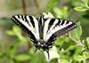

Here are some interesting and strange butterfly facts. You can use these to amaze your family and friends.

The Monarch butterfly, also known as the milkweed butterfly, migrates great distances. Eastern Monarchs travel to Mexico, while those in the Rocky Mountains go to California.

The Monarch cocoon is called a chrysalis. As the butterfly begins to metamorphose, the chrysalis darkens and turns transparent before the butterfly emerges.

Swallowtail butterflies are known for their large, colorful wings. Some have forked tails resembling a swallow’s, giving them their name.
The Zebra Swallowtail has striking black-and-white markings with small red and blue accents. It is the official state butterfly of Tennessee.
Swallowtail (butterfly) Wikipedia

Many Morpho butterflies have iridescent blue wings. This dazzling effect comes from light reflecting off microscopic scales.
The Morpho butterfly’s life cycle lasts around 137 days, with adults living about a month. They are toxic to predators due to the caterpillar’s diet.